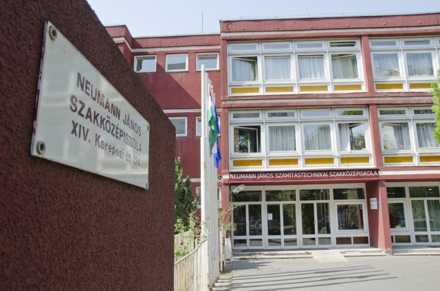

Miért Ajánljuk a BMSZC Neumann János Informatikai Technikumot?
BMSZC NEUMANN János informatikai technikumot mindenkinek csak ajánlani tudjuk.
A szint amit az iskola képvisel kimagasló nem csak Magyarországon, hanem európa szerte is. Rengeteg szakmai tapasztalatot illetve tudást nyújt az iskola, amellyel az életbe könnyen tudnak a diákok boldogulni. Amennyiben a jegyei jó a tanulonak, még ösztöndíjat is kap a diák és nem is keveset.
Az iskola közössége kiváló, itt mindenféle emberrel találkozhatsz és nem leszel sose kiközösítve. Mindenki betud illeszkedni valahova, olyan emberek közé akivel jól érzi magát és jókat tudnak beszélni. Rengeteg iskolai programot is szerveznek, pl.: A híres “Neu nap” amely során ezekkel az emberekkel ismerkedhetsz különböző programokon.
A Neumann rengeteg szakkört kinál, önvédelmitől kezdve zenei és egyéb tehetségképző foglalkozást nyújt. Az osztályunk kedvence a Papp Zoltán Tibor Tanár Úr álltal szervezett délutáni foglalkozás amely során zenei tehetséget gondozzák és fejlesztik.
Neumann a diákok versenyeztetésébe is kiváló, külön csoportba helyezik az erre allkalmas diákokat és ők megkapják a megfelelő lehetőséget, hogy kitűnjenek és a tudásukat megmutatthasák versenyekbe. A versenyekért nyilván díjakkat és különböző jutalmakat nyerhetnek, akár külföldi utazást is.
A Neumannt ezért tudjuk mindenkinek ajánlani,és nem hiába magyarország legjobb intézménye.